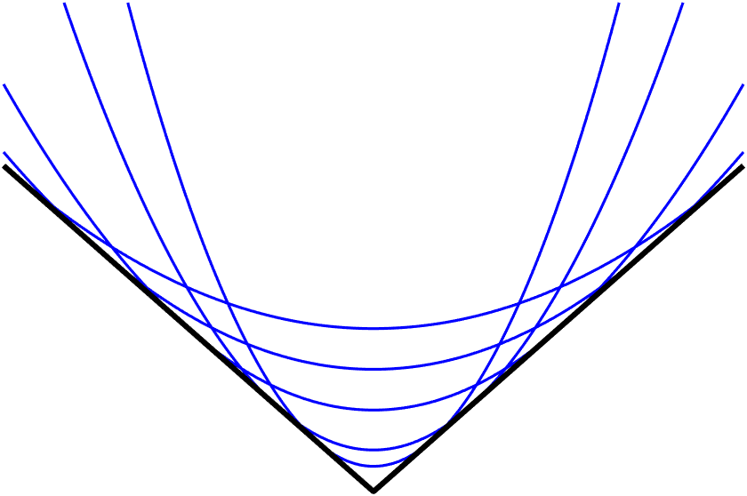

HadamardLangevin 
API
HadamardLangevin package
HadamardLangevin
Index
Index
G
|
H
|
I
|
M
|
O
|
R
G
GaussianFilter() (in module HadamardLangevin.utils)
GaussianFilter_2d() (in module HadamardLangevin.utils)
generate_samples_stride() (in module HadamardLangevin.samplers)
generate_samples_x() (in module HadamardLangevin.samplers)
getWaveletTransforms() (in module HadamardLangevin.utils)
getWaveletTransforms_2D() (in module HadamardLangevin.utils)
gibbs_sampler() (in module HadamardLangevin.samplers)
H
HadamardLangevin
module
HadamardLangevin.samplers
module
HadamardLangevin.utils
module
I
ISTA() (in module HadamardLangevin.utils)
M
module
HadamardLangevin
HadamardLangevin.samplers
HadamardLangevin.utils
O
one_step_hadamard() (in module HadamardLangevin.samplers)
one_step_langevin() (in module HadamardLangevin.samplers)
one_step_MALA() (in module HadamardLangevin.samplers)
one_step_MALA_hadamard() (in module HadamardLangevin.samplers)
R
rFISTA() (in module HadamardLangevin.utils)